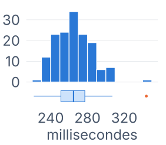
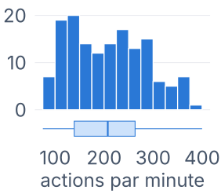
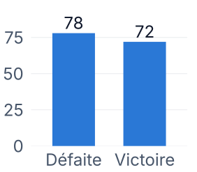
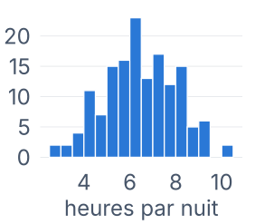
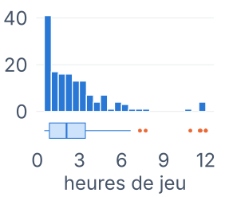
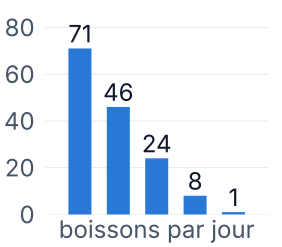
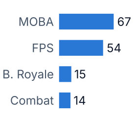
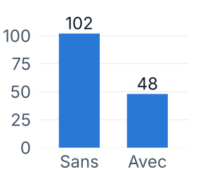
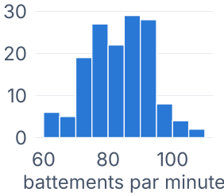
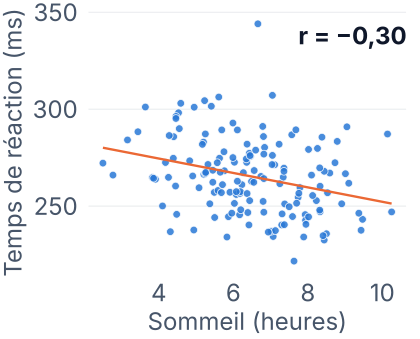
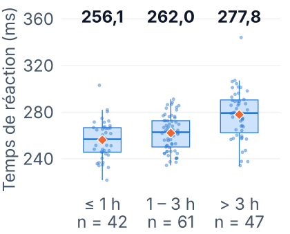
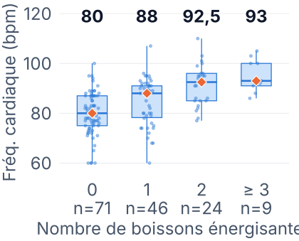
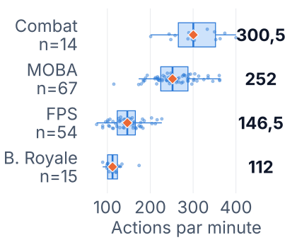
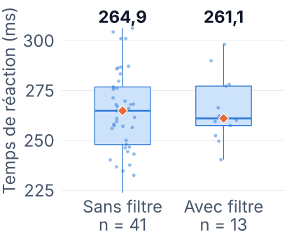
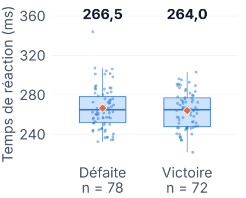
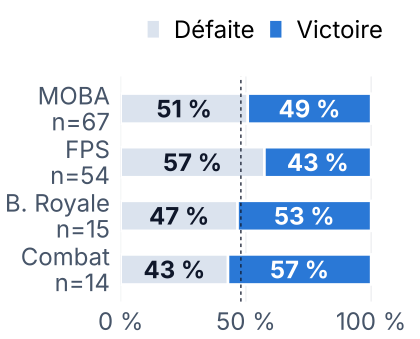
| Variable 1 | Variable 2 | Test | Coef. | p-valeur | Liaison (5 %) |
|---|---|---|---|---|---|
| Âge | TR | Pearson | 0,40 | 3·10−7 | positive |
| VFC | TR | Pearson | −0,34 | 2·10−5 | négative |
| Sommeil | VFC | Pearson | 0,37 | 3·10−6 | positive |
| Temps de jeu | VFC | Spearman | −0,27 | 8·10−4 | négative |
| FC | APM | Pearson | 0,35 | 1·10−5 | positive |
| Boissons | TR | Spearman | 0,03 | 0,72 | aucune |
| Luminosité | TR | Pearson | −0,01 | 0,87 | aucune |
| Genre | TR | Kruskal-Wallis | — | 0,67 | aucune |
| APM | Issue du match | Welch | — | 0,84 | aucune |
| Filtre | Issue du match | χ² | — | 0,87 | aucune |